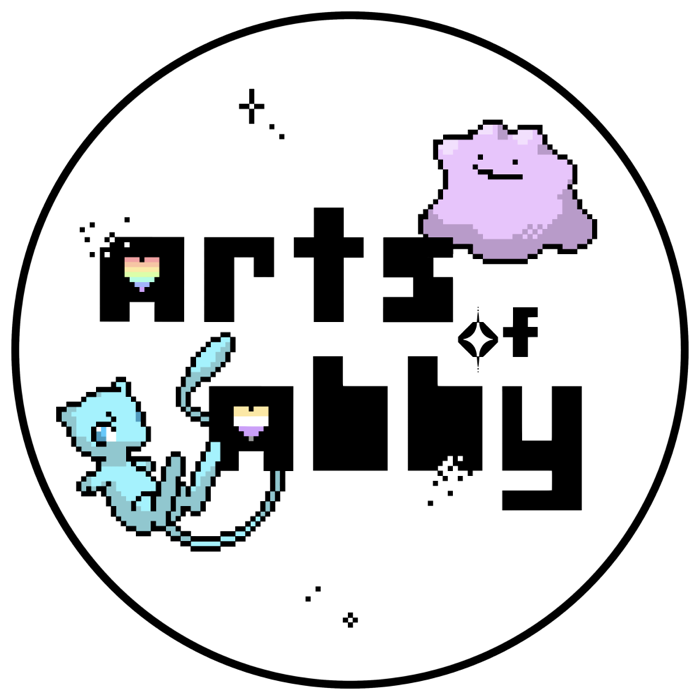

Daycare
Daycare
Tattoo's
Arts of Abby
In de studio streef ik naar een warme, rustige en vooral veilige plek waar inclusiviteit centraal staat. Een plek waar queer en neurodiverse mensen zich op hun gemak kunnen voelen tijdens het zetten van een tattoo.
Je geborgen voelen tijdens deze ervaring is belangrijk, en daarom neem ik de tijd, bied ik een luisterend oor en denk ik graag met je mee. Hier ben je even echt in het moment. Een plek waar niks raar of verkeerd is, waar jij jezelf mag zijn.